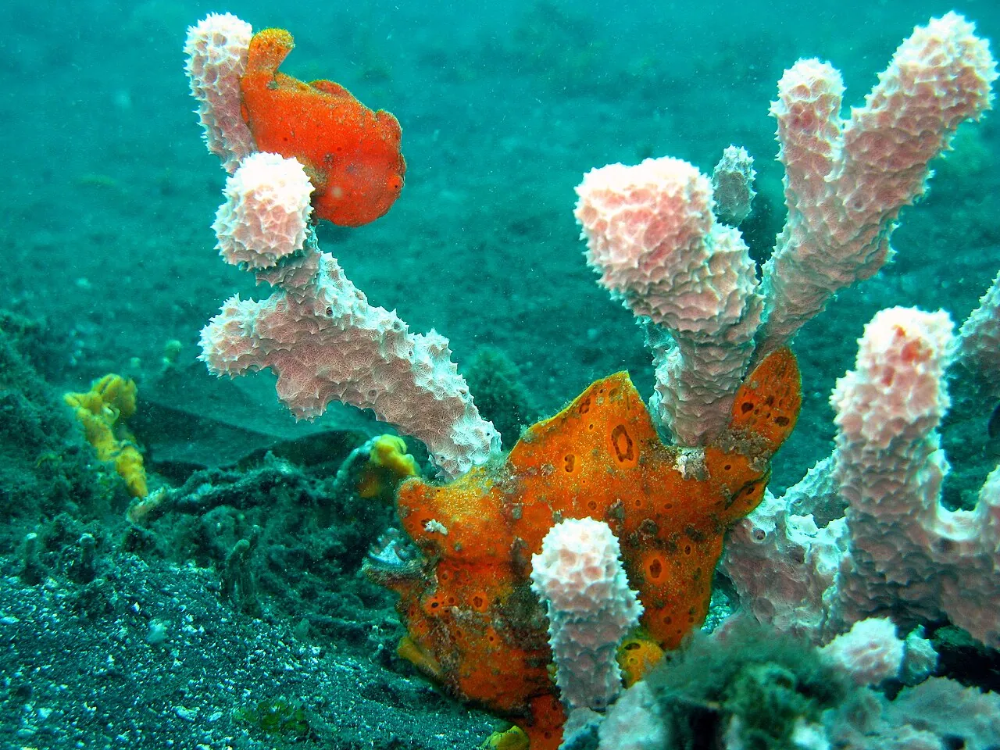

Détroit de Lembeh
Sulawesi, Indonésie · plongée

Capitale mondiale de la plongée « muck » sur sable noir, peuplée de créatures étranges : poulpes mimétiques, hippocampes pygmées.
- Lieu
- Sulawesi, Indonésie
- Niveau
- Intermédiaire
- Activités
- plongée
- Type d'eau
- Mer / océan
- Coordonnées
- 1.45, 125.23 (position approximative du secteur)
Dangers à connaître
- Faune fragile.
- Visibilité réduite.
Le conseil d'Ocean Buddy
Travaille ta flottabilité : on plonge au ras du sable.
Ouvrir dans Ocean Buddy Télécharger sur l'App Store
Source : Fiche Ocean Buddy · septembre 2026 · à vérifier localement.